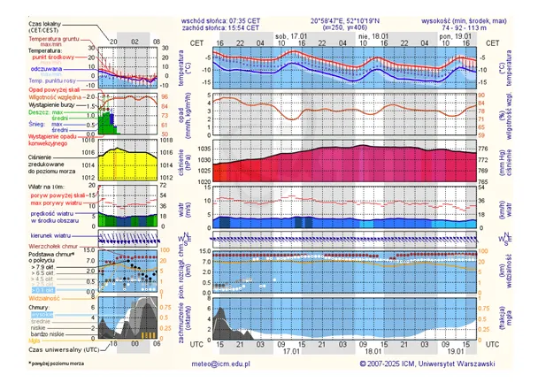
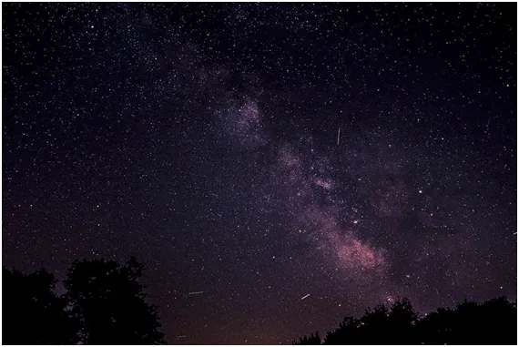
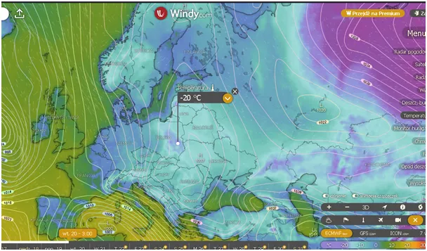
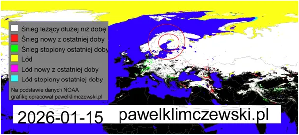

Gwiazdy też nas widzą! Poczujemy jak blisko jesteśmy związani z Kosmosem.
Trzy noce bez chmurki to się nie może skończyć tylko na minus 10, a tak to prorokują karbo-frustraci. Wykres dla Mazowsza poniżej.

Polska na linii Wisły podzielona na plus i minus. Na wschodzie ziemia jest bardzo wymrożona i podczas nocy bez chmur szybko poczujemy na własnej skórze jak blisko jesteśmy związani z Kosmosem. Ciepło dosłownie z naszych sypialń, przez szyby i ściany będzie ulatywało w Kosmos, w sumie całkiem blisko, tylko kilkadziesiąt km nad nasze głowy przez atmosferę, a potem już przez bezmiar wszechświata.

Sprawa jest dość prosta, skoro w bezchmurną noc widzimy gwiazdy, to gwiazdy też nas widzą. Co to znaczy widzieć coś? To znaczy odbierać bezpośrednio fotony emitowany przez to coś. Gdy nie ma chmur fotony podczerwieni emitowane przez nasze cieplutkie sypialnie uciekają w otwarty kosmos i wiele z nich nie napotkawszy nic po drodze doleci to tych gwiazd odległych o miliony lat świetlnych.
Ludzka egzystencja też ma taki wymiar: drewno zebrane naszymi rękoma i spalone w kominku ogrzeje najdalsze zakątki wszechświata. Przykre jest to, że musimy za to płacić podatki w formie ETS i podobne. Najbliższe dni to ekspansja azjatyckiego wyżu i niebo będzie wyjątkowo czyste. Będzie przybywało Słońca a dłuższe dni poprawią nam nastroje. Wyż to suche powietrze, zatem śniegu się nie spodziewajmy do kolejnego zderzenia z atlantyckim, mokrym frontem. Trochę to potrwa.

Generał Zima, podobnie jak w 1945, w połowie stycznia rusza dziarsko na zachód i będzie na linii Odry starał się zdobyć tautońskie rubieże. Dobrze mu idzie na północy, Bałtyk zamarza wyjątkowo wcześnie. To fenomen, którego nie da się wytłumaczyć "oziębieniem przez ocieplenie", dlatego niewiele o tym piszą w głównym ścieku.

Przyglądajmy się przez najbliższe dni jak na naszym niebie chmury dosłownie rozpuszczają się w powietrzu, to skutek dużej zdolności powietrza pod wysokim ciśnieniem do absorpcji pary wodnej w postaci przeźroczystego gazu. Więcej o tym tu : https://pawelklimczewski.pl/2024/07/01/lod-wrze-gaz-zamarza-ciecz-paruje-cuda/
Paweł Klimczewski